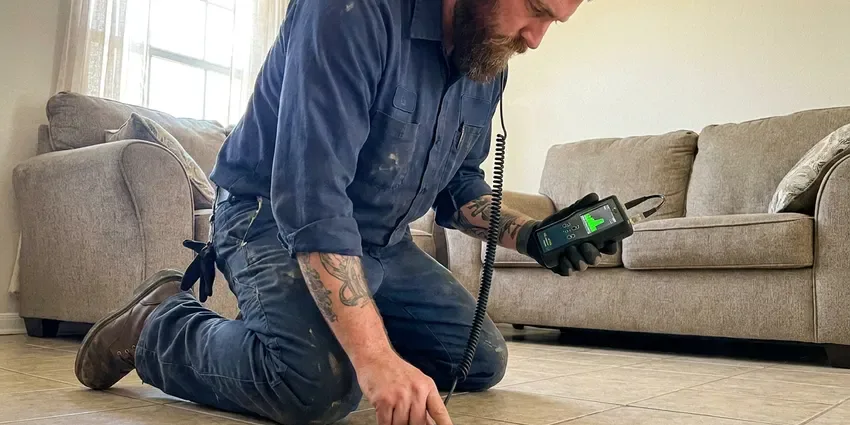

Water Heater Maintenance in Daphne, AL
Protect your investment and extend the lifespan of your water heater in Daphne, AL through the expert maintenance solutions offered by BRV Plumbing.
- Fast, reliable service
- Licensed, experienced technicians
- Upfront pricing
- Satisfaction guaranteed

Expert Water Heater Service in Daphne, AL.
Don't wait for a cold shower, contact BRV Plumbing today for proactive water heater care.
Expert Water Heater Maintenance in Daphne, AL
At BRV Plumbing, we understand that a well-maintained water heater is crucial for comfort and energy savings in Daphne, AL. Our preventative maintenance helps avoid common issues like sediment buildup, anode rod corrosion, and inefficient heating, saving you from future headaches.
Our expertise includes:
- Flushing sediment from tanks
- Inspecting anode rods
- Testing pressure relief valves

Additional Plumbing Maintenance Services in Daphne, AL
Our maintenance and specialty plumbing services in Daphne, AL protect your home year-round and extend the life of every system.


Customers
Why Choose BRV Plumbing for Water Heater Maintenance in Daphne, AL?
Ignoring routine maintenance can lead to premature system failure and higher operating costs. By investing in professional care, you're ensuring your water heater operates safely and efficiently for years to come.
- Extend Lifespan, Proper maintenance can significantly extend the operational life of your water heater, delaying the need for an expensive replacement.
- Energy Efficiency, A well-maintained water heater runs more efficiently, consuming less energy and lowering your monthly utility bills.
- Prevent Breakdowns, Routine checks identify potential problems early, preventing minor issues from escalating into major, inconvenient breakdowns.
Citywide Coverage
BRV Plumbing proudly serves every neighborhood in Daphne and the surrounding areas for all your water heater maintenance needs. We understand the diverse housing types across Daphne and tailor our maintenance approach to suit your specific system.
Experienced Team
The BRV Plumbing team is highly skilled in diagnosing and addressing potential issues during water heater maintenance. We pride ourselves on our technicians' ability to provide thorough, accurate service, ensuring your system's optimal performance and safety.
Safety-First Approach
Safety is paramount in all our water heater maintenance services. We adhere strictly to all local Alabama plumbing codes and industry best practices to ensure your system operates safely and efficiently, protecting your home and family.
Trusted Certified Daphne Plumbing Services Professionals
At BRV Plumbing, we take pride in providing licensed, certified plumbing services throughout Daphne, AL. Backed by leading industry credentials, our experienced plumbers combine technical skill with genuine customer care. Whether it is repair, installation, or maintenance, we follow strict safety and quality standards to deliver lasting results you can trust.
Call Us Now PHCC Plumbing Contractor Recognition
PHCC Plumbing Contractor Recognition Better Business Bureau (BBB) Accreditation
Better Business Bureau (BBB) Accreditation Angi Certified Pro
Angi Certified Pro ISO 9001 Quality Management Certification
ISO 9001 Quality Management CertificationThorough Water Heater Maintenance Services in Daphne, AL
Standard Tank Water Heater Maintenance in Daphne
Our standard tank water heater maintenance includes flushing the tank to remove sediment buildup, which is common in Alabama due to mineral content in the water. We also inspect and test the temperature and pressure relief valve, check the anode rod for corrosion, and examine all connections for leaks. This proactive service helps prevent efficiency loss and extends the life of your conventional hot water heater, which is a significant investment for any homeowner.

Tankless Water Heater Maintenance in Daphne, AL
Tankless water heaters require specialized maintenance, primarily involving descaling to remove mineral deposits that can accumulate in the heat exchanger. This is particularly important in Alabama where hard water can affect performance. Our technicians use a safe, acidic solution to flush the system, ensuring optimal efficiency and preventing premature failure. We also inspect the igniter, burner, and ventilation systems to ensure safe and continuous operation for your on-demand hot water.
Anode Rod Inspection and Replacement in Daphne
The anode rod is a sacrificial component in your water heater designed to corrode instead of the tank itself. In Alabama's water conditions, these rods can wear down faster than expected. During maintenance, we inspect the anode rod's condition and recommend replacement if necessary. A healthy anode rod is crucial for preventing rust and extending the lifespan of your water heater tank, saving you from a costly full system replacement.
Water Heater Leak Detection and Prevention in Daphne, AL
Leaks are a common issue that can lead to significant water damage if not caught early. Our maintenance service includes a thorough inspection of all water heater connections, pipes, and the tank itself for any signs of leaks or corrosion. We examine the drain pan and surrounding area for moisture. Early detection and repair of small leaks can prevent larger, more destructive problems, protecting your home's foundation and interior from water damage.
Thermostat and Heating Element Checks in Daphne
For electric water heaters, we test the thermostat and heating elements to ensure they are functioning correctly and providing accurate temperature control. Faulty elements or thermostats can lead to insufficient hot water or excessive energy consumption. For gas water heaters, we inspect the burner assembly and pilot light. Proper functioning of these components is vital for both efficiency and safety, especially with the fluctuating temperatures common in Alabama.
Commercial Water Heater Maintenance in Daphne, AL
BRV Plumbing also offers maintenance services for commercial water heaters, understanding the critical need for reliable hot water in businesses. These larger, more complex systems require specific expertise for flushing, descaling, and inspecting commercial-grade components. Our technicians are trained to handle the demands of commercial units, ensuring your business in Daphne maintains consistent hot water supply without interruption, which is essential for operations.
Preventative Maintenance for All Brands in Daphne
Our team is experienced in providing maintenance for all major water heater brands, including Rheem, AO Smith, Bradford White, Noritz, Rinnai, and more. Regardless of your unit's manufacturer, we have the tools and knowledge to perform the necessary checks and adjustments. We follow manufacturer guidelines to ensure your warranty remains valid and your specific model receives the precise care it needs to operate efficiently and reliably in your Daphne home.

Annual Maintenance Plans for Daphne, AL Homes
To make water heater maintenance simple and worry-free, BRV Plumbing offers annual maintenance plans for homes in Daphne, AL. These plans ensure your water heater receives regular, scheduled attention, helping you avoid forgetting crucial service. Members often receive priority scheduling and discounts on repairs, providing peace of mind and long-term savings on your hot water system.
Water Heater Maintenance Near Me in Daphne, AL
Looking for reliable water heater maintenance "near me" in Daphne, AL? BRV Plumbing is your local expert, providing prompt and professional services right in your neighborhood. We understand the specific needs of homes in this area and are always ready to respond.
When you search for water heater maintenance in Daphne, you want a trusted, local company. Our team is strategically located to serve all parts of Daphne, ensuring we can get to your home quickly for efficient and thorough water heater care.
BRV Plumbing at a Glance
- Licensed and insured plumbers serving Daphne, AL
- Same-day appointments and 24/7 emergency response
- Upfront, flat-rate pricing before work begins
- 4.8-star rated by 549+ Alabama customers
Daphne Map
Daphne Information
- Population
- 30,321
- Area codes
- Local
- Service area
- Daphne and communities within 40 miles
- Nearby
- Mobile, Enterprise, Prattville, Montgomery
Regular water heater maintenance is especially vital for homes in Daphne, AL, where varying water hardness and seasonal temperature swings can accelerate wear and tear on your hot water system.
Expert Services
Trust our professionals for reliable BRV Plumbing solutions in Daphne, AL.
Our Specialized Plumbing Services in Daphne, AL
At BRV Plumbing, we provide a complete range of plumbing services across Daphne, AL. From leak detection to full system installations, our team ensures fast, precise, and affordable service for both residential and commercial properties. Explore our core services below:


How Our Water Heater Maintenance Process Works in Daphne, AL
Our water heater maintenance process is designed to be thorough and transparent, ensuring your system receives the best possible care.
Request a Quote
Call us at (256) 391-9413 or fill out our online form to schedule your water heater maintenance. We'll discuss your needs and provide transparent pricing upfront.
On-Site Inspection
Our technician arrives on time, performs a detailed inspection of your water heater, and identifies any potential issues or areas needing attention specific to Alabama's climate.
Comprehensive Service
We conduct a full flush, inspect critical components, and perform necessary adjustments, ensuring your water heater is operating efficiently and safely.
Frequently Asked Questions About Water Heater Maintenance in Daphne
The cost of water heater maintenance in Daphne, AL typically ranges from $100 to $250, depending on the type of water heater (tank vs. tankless) and the extent of service required. This usually includes flushing, anode rod inspection, and safety checks. We provide upfront pricing before any work begins.
Common signs include reduced hot water supply, strange noises (like popping or rumbling) coming from the tank, rusty or discolored water, or an increase in your energy bills. If you notice any of these in your Daphne home, it's time for a professional check-up.
Most manufacturers recommend annual maintenance for optimal performance and longevity. For homes in Daphne with hard water, more frequent checks, perhaps every 6-9 months, can be beneficial to prevent excessive sediment buildup and maintain efficiency.
While maintenance itself isn't warrantied like a repair or installation, we guarantee the quality of our workmanship. If an issue directly related to our maintenance service arises within a specific period, we will address it promptly. Your satisfaction is our priority.
A typical water heater maintenance service usually takes about 1 to 2 hours, depending on the type of unit and its condition. Tankless water heater descaling might take slightly longer. We work efficiently to minimize disruption to your Daphne home.
Absolutely. Regular maintenance, particularly flushing sediment and inspecting the anode rod, significantly extends your water heater's lifespan by preventing corrosion and wear on internal components. This saves you from premature replacement costs.
Sediment buildup consists of mineral deposits, primarily calcium and magnesium, that settle at the bottom of your water heater tank. In Alabama's water conditions, this is common. It reduces efficiency, causes strange noises, and can lead to premature tank failure if not flushed regularly.
Generally, a permit is not required for routine water heater maintenance, as it involves inspections and minor adjustments rather than new installations or major repairs. If a repair during maintenance becomes substantial, we will advise on any necessary permits.
What People Are Saying About Our Plumbing Experts?

Mark T.
When our office needed drain cleaning, BRV Plumbing provided quick, reliable service. The plumber arrived on time and made sure every drain flowed perfectly before leaving. Very satisfied.
Drain Cleaning · Dothan, AL
Sofia M.
Two new toilets installed in one visit, no mess left behind, and the tech even adjusted a faucet he noticed was dripping. Fair pricing and really friendly.
Toilet Installation · Prattville, AL
James P.
Our commercial plumbing system had a leak under the sink, and BRV Plumbing handled it professionally. The plumbers arrived quickly and restored everything without disruption to our customers.
Commercial Plumbing · Tuscaloosa, ALRobert G.
The trenchless sewer replacement saved our front yard. They walked us through the camera inspection footage first so we knew exactly what we were paying for.
Sewer Line Replacement · Montgomery, ALLaura S.
I scheduled a water heater replacement, and the team made the process smooth and affordable. The new unit works perfectly, and they cleaned up after completing the job.
Water Heater Replacement · Enterprise, AL
Emily R.
I called BRV Plumbing for plumbing repair, and the technician was fast, polite, and thorough. They explained the problem clearly and fixed it the same day. I will definitely hire them again. Highly recommended!
Plumbing Repair · Dothan, AL